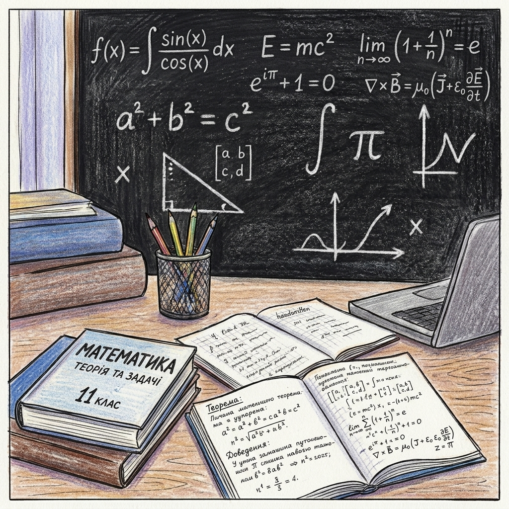
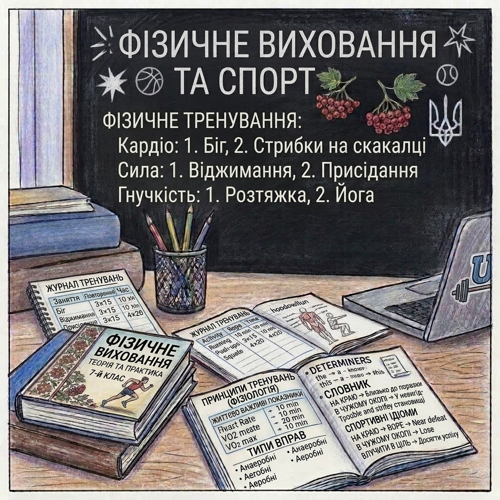
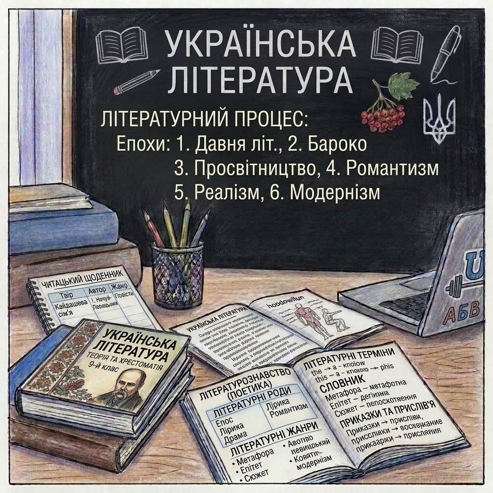
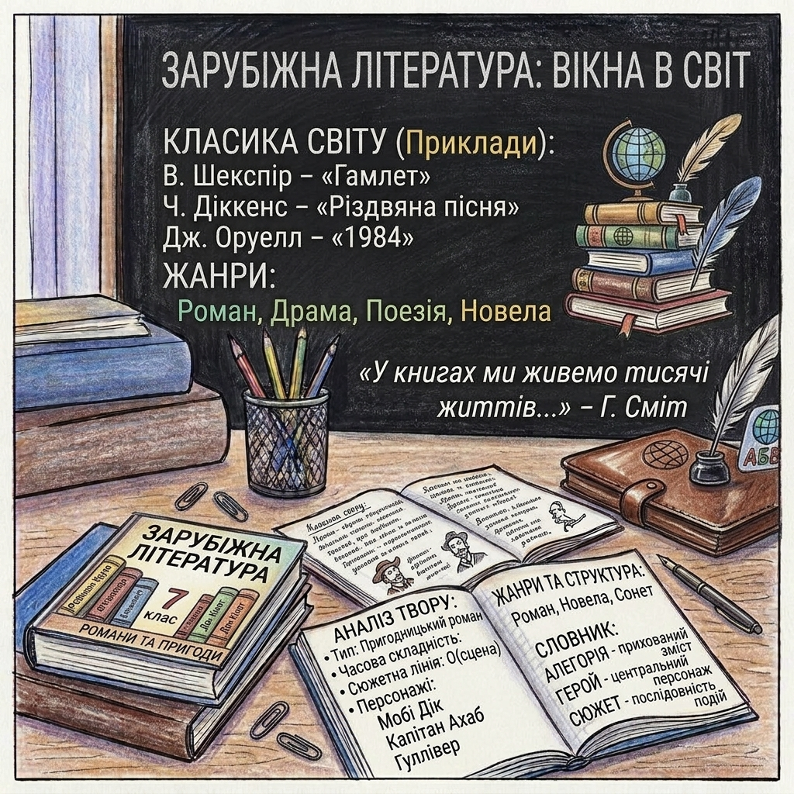
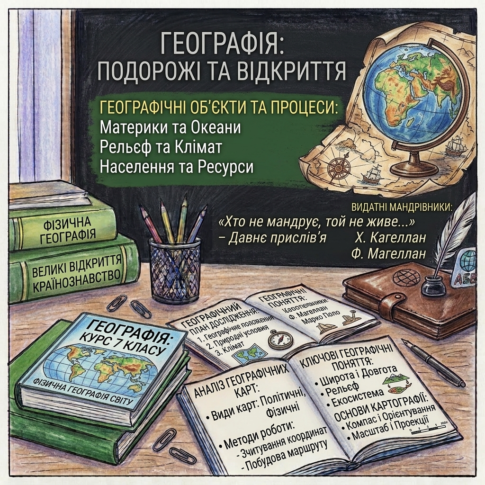
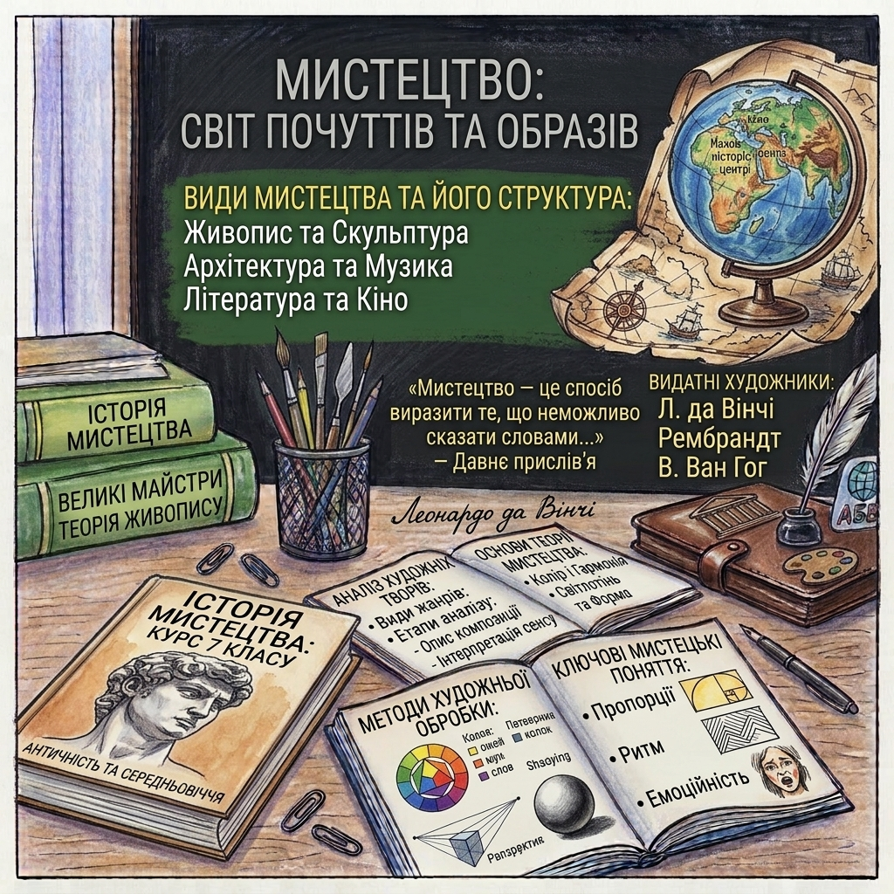
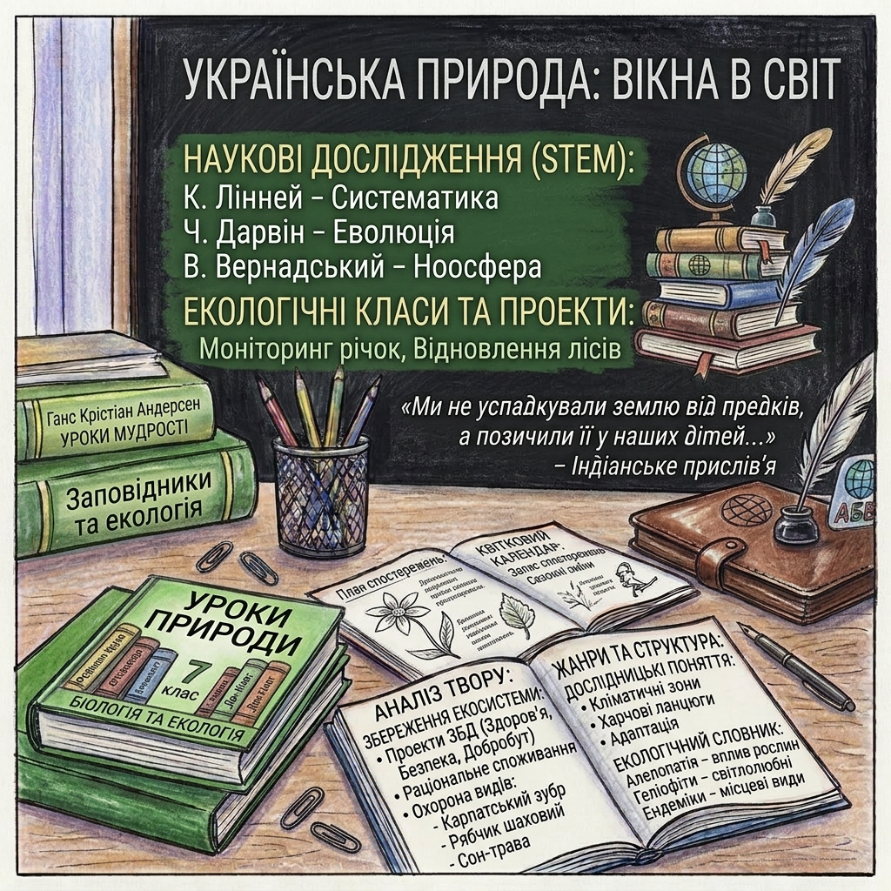
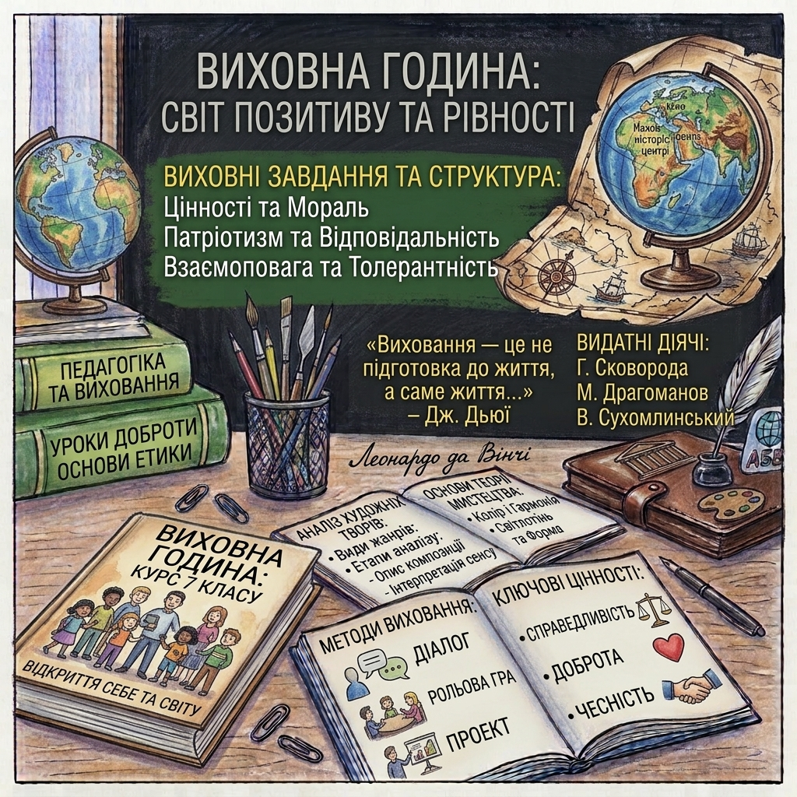
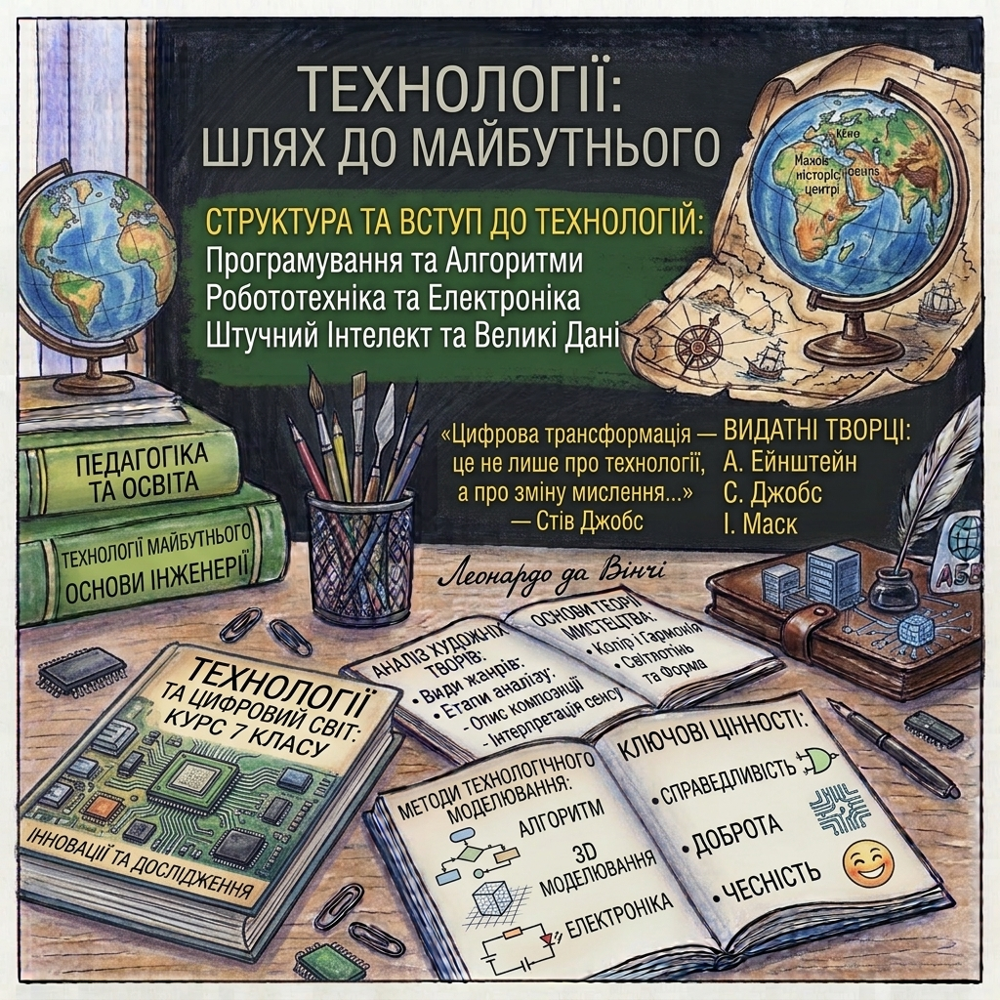
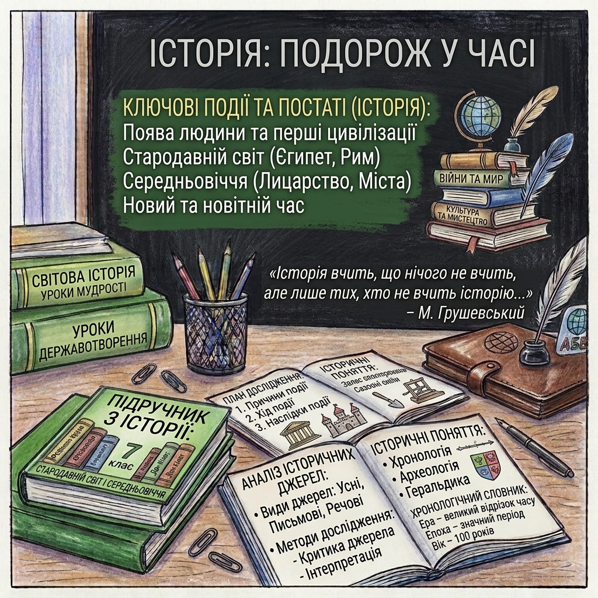

Математика — це точна формальна наука, яка вивчає кількісні відношення, просторові форми, структури та зміни за допомогою логічних міркувань і доведень.

Фізкультура (скорочення від «фізична культура», розмовне — фізра) — це діяльність і система занять, спрямовані на зміцнення здоров'я, покращення фізичної форми, розвиток сили, витривалості та рухових навичок людини.

Українська література — це сукупність художніх творів, написаних українською мовою, що відображають історію, культуру та духовний світ українського народу.

Зарубіжна література — це сукупність художніх творів, написаних іншими мовами, що відображають різні культури та духовні світи.

Географія — це наука про розташування, властивості та взаємозв'язки природних і соціальних явищ на поверхні Землі.

Мистецтво — це сукупність художніх творів, створених людиною для вираження естетичних і духовних ідей.

Пізнаємо природу(ЗБД, STEM) — це сучасний шкільний предмет для учнів 5 і 6 класів (в рамках програми Нової української школи — НУШ). Він замінив старе «Природознавство» і є містком між початковою школою та складними науками, які почнуться у 7 класі (біологія, географія, фізика, хімія).

Виховна година — це особлива форма виховної роботи у школі, під час якої класний керівник проводить бесіду, обговорення чи гру з учнями свого класу. На відміну від звичайних уроків, тут не ставлять оцінок, не задають домашніх завдань, а спілкуються на важливі життєві, моральні, соціальні та культурні теми.

Технології — це сукупність методів, інструментів, знань, майстерності та процесів, які використовуються для створення товарів, надання послуг, вирішення завдань або проведення наукових досліджень. Простішими словами, технології — це способи, за допомогою яких людина змінює світ навколо себе, щоб зробити своє життя простішим, безпечнішим та комфортнішим.

Історія — це наука про минуле людства, вивчає розвиток суспільства, політичні, економічні та культурні процеси.
